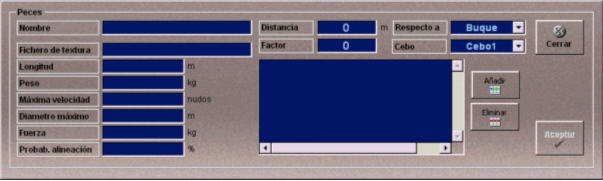

Peces
La creación y edición de peces se realiza mediante la siguiente ventana.

Esta ventana permite especificar los datos que definen cada tipo de pez, así como la tabla de distancias y factor sorpresa que se aplicará para evaluar cómo afectan los buques cercanos al desplazamiento del cardumen.
Para cada pez se definen los datos que se describen a continuación:
Nombre: Nombre del pez.
Formato: caracteres alfanuméricos.
Fichero de textura: Nombre del fichero de textura que se aplica al pez en la ventana de vista submarina.
Longitud: Longitud del pez.
Unidades: metros
Rango: 0.0- 10.0
Peso: Peso del pez.
Unidades: kilogramos
Rango: 0.0- 200.0
Velocidad Máxima: Velocidad máxima a la que se mueve el cardumen cuando hay un buque cercano y se ha definido factor sorpresa.
Unidades: metros
Rango: 0.0 - 50.0 nudos
Diámetro Máximo: Diámetro del pez.
Unidades: metros
Rango: 0.0 - 2.0
Fuerza: Fuerza con la que puede empujar los peces cuando se alinean.
Unidades: kilogramos
Rango: 0.0 - 1000.0
Probab. Alineación: Probabilidad de que los peces se alineen.
Unidades: %
Rango: 0 - 100
Tabla de comportamiento: Tabla que define el comportamiento del pez ante la proximidad de un elemento externo.
Distancia: Distancia máxima a la que un elemento externo afecta al comportamiento del pez.
Unidades: metros
Rango: 0.0 - 10000.0/p>
Factor: Determina el comportamiento del pez. Es el factor por el que se multiplica la velocidad máxima del pez, para obtener la velocidad horizontal del cardumen.
Valores negativos indican que el pez huye del elemento externo.
Valores positivos indican que el pez se acerca al elemento externo.
Unidades: adimensional
Rango: -1.0 - 1.0
Respecto a: Elemento externo que altera el comportamiento del pez. Puede tomar los siguientes valores:
Cebo: Si el elemento externo elegido es Palangre hay que seleccionar uno de los cebos disponibles (los cebos se establecen en el fichero de configuración Ulises.ini).
Para introducir valores en la tabla, hay que rellenar los campos Distancia, Factor, Respecto a y Cebo y pulsar el botón Añadir.
Para eliminar valores de la tabla, hay que seleccionar un valor y pulsar el botón Eliminar.
Los peces, una vez creados, se añaden a los cardúmenes, los cuales a su vez pueden ser añadidos a los escenarios.